理财人格 / 投资小现场
共13题，包含1题投资经验和12题场景。按熟悉程度出题，选完直接进入下一题。
点击缩略图打开对应的真实可玩状态；回到开场可体验完整一轮。
01 开场 · 共13题
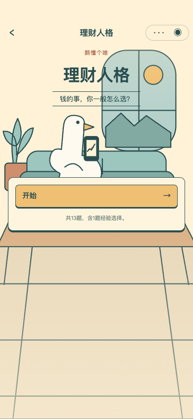
02 第1题 · 投资经验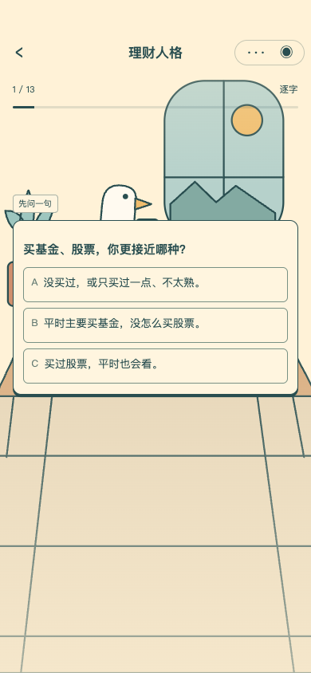
03 日常 · 多了一笔钱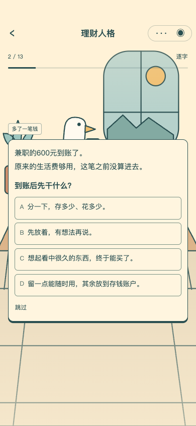
04 日常 · 条款没看懂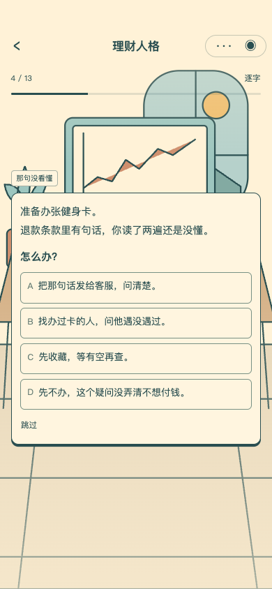
05 日常 · 下周要用的钱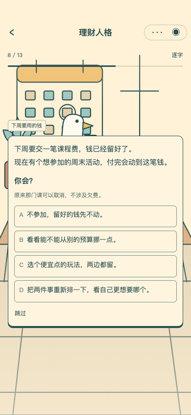
06 基金 · 第一次选基金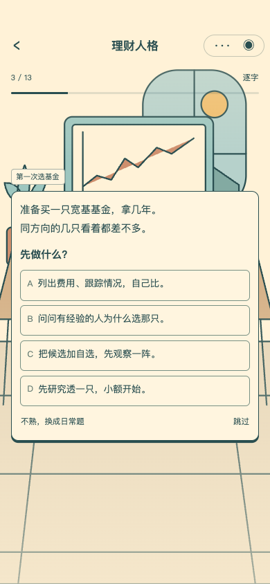
07 基金 · 同方向三只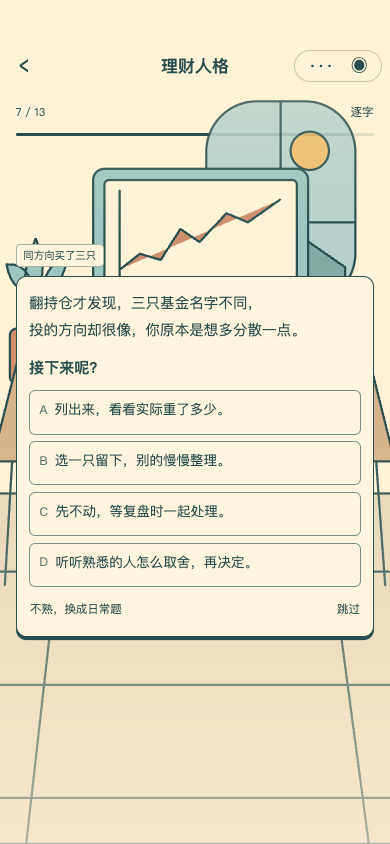
08 基金 · 分红怎么收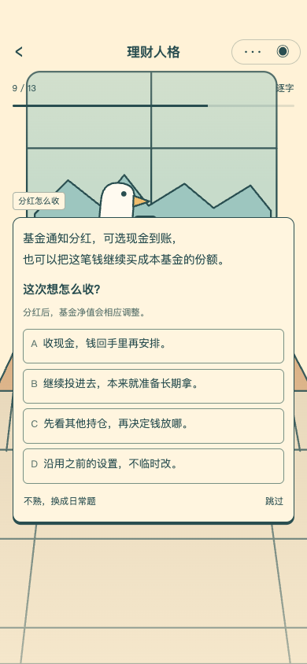
09 股票 · 公司公告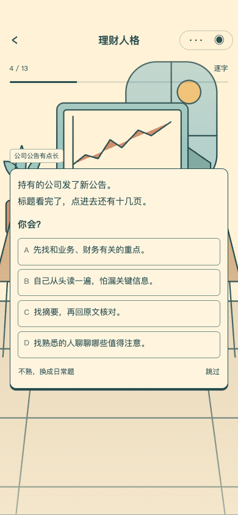
10 股票 · 十二只持仓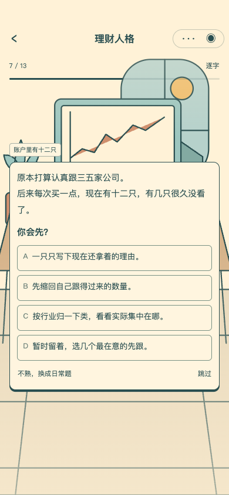
11 股票 · 挂单差一点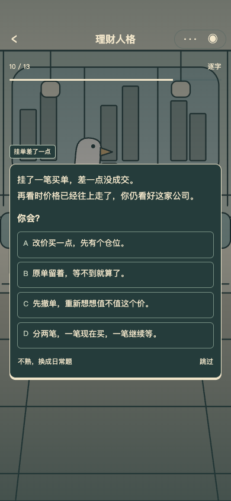
12 结果 · 展开可看依据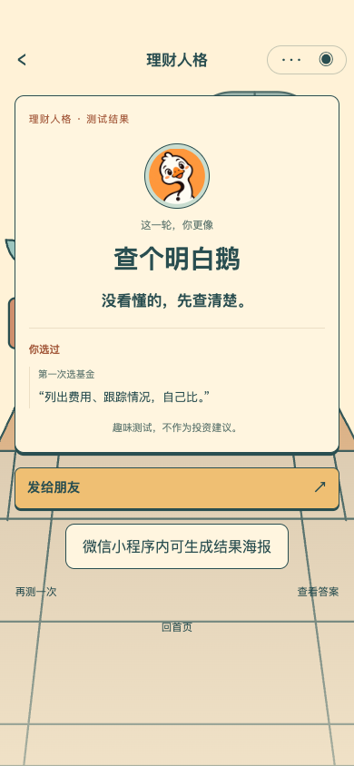